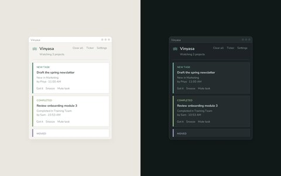
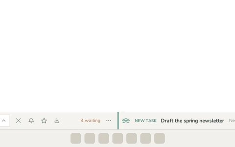
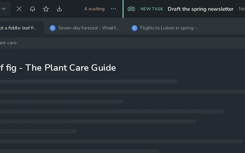
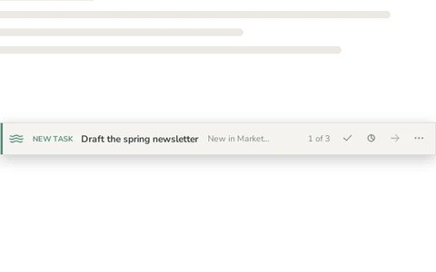
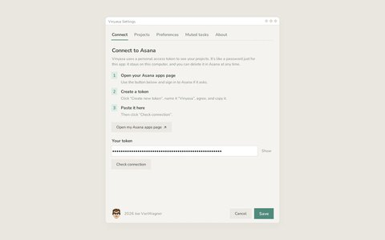
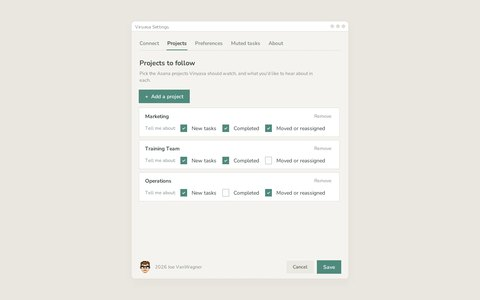
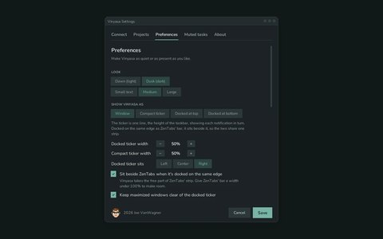
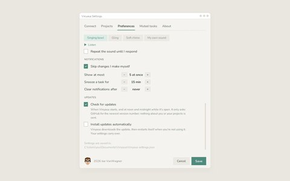
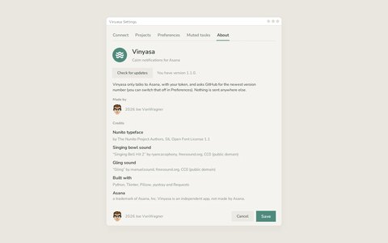

Tool · Windows desktop app (Python)
Vinyasa
Calm notifications for the Asana projects you care about.
Asana can tell you about everything, which quickly becomes too much to notice anything. I wanted to know about the handful of projects that matter to my day, as it happens, without keeping a browser tab open or wading through an inbox. Vinyasa is a small window that stays on top of your work (or tucks into the system tray) and quietly lists what changed: new tasks, completed tasks, and tasks that were moved or reassigned. A gently struck singing bowl rings when something arrives.
It can also be a one-line ticker, as tall as the taskbar, docked along the top or bottom of the screen, showing each notification in turn. Docked beside ZenTabs' bar, the two share one strip: your browser tabs on one side, your Asana projects on the other.
It's named for the yoga practice of moving with your breath: the idea is to stay in your flow and only look up when there's a reason to.
Free, for Windows 10 and 11. Nothing to install: unzip it and double-click Vinyasa.exe. It keeps itself up to date. Vinyasa only talks to Asana (and asks GitHub for the newest version number); nothing is sent anywhere else.
Try it
The real app runs on Windows, so here's a preview of it in your browser, with a few sample notifications. Click Send a sample notification to hear the bowl, then try Got it, Snooze, and Switch to Dusk. Then click Try the ticker to see it docked beside ZenTabs' bar, turning to the next notification every few seconds.
Getting started
- Download and unzip. Then move the Vinyasa folder somewhere you'll keep it, like Documents.
- Double-click Vinyasa.exe. Windows may say “Windows protected your PC”, because Vinyasa is a small independent app that isn't registered with Microsoft. Click More info, then Run anyway. You'll only see this once.
- Connect Asana. The Settings window shows you how to make a personal access token in Asana (a password just for Vinyasa) and checks that it works.
- Pick your projects from a searchable list of your own, choose what you'd like to hear about in each, and click Save. That's it.
What it does
- Only what you ask for: for each project, choose new tasks, completed tasks, moves and reassignments, or any mix. Changes you make yourself are skipped, so you only hear about other people's.
- Every notification, one click: Open in Asana goes straight to the task; Got it clears it; Snooze quiets that task for a while; Mute task stops it for good (and it can be unmuted in Settings).
- Gentle sounds: a recorded singing bowl by default, a soft “gling”, a synthesized chime, or any sound file of your own. It can repeat until you respond, or stay silent.
- Out of the way: keep it on top of other windows, or close it to the system tray, where a small dot appears on its icon when something new arrives. Pause notifications from the tray when you need focus.
- A one-line ticker: the window can become a single line, as tall as the taskbar, showing each notification in turn (it holds still while your pointer is on it). Click one to open it in Asana, or use its small Got it, Snooze and Open buttons; right-click for everything else. It floats anywhere, or docks along the top or bottom of the screen like a second taskbar, keeping maximized windows clear.
- Beside ZenTabs: docked on the same edge as ZenTabs' bar, it sits in the free part of ZenTabs' strip, so the two read as one taskbar.
- Keeps itself up to date: it checks for a new version when it starts and at noon and midnight, and can install it by itself and restart while you're not using it. Your settings carry over.
- Easy on the eyes: a light Dawn theme and a dark Dusk theme, three text sizes, and the rounded, friendly Nunito typeface.
- Portable: settings live next to the app, so the whole folder can move to another computer or a USB stick. It can also start itself when you sign in to Windows.
Screenshots


















How it's built
Vinyasa is a single Python program with a Tkinter interface. A background thread asks Asana's Events API what changed in each project every few seconds, using the API's sync tokens so it only ever sees what's new, and it turns those raw events into plain sentences (“Moved to In Review”, “Assigned to Jordan”). If Asana can't be reached it waits longer between tries and says so, instead of failing silently. The window, the tray icon, and the setup screens are all drawn to look calm in both themes, with large click targets and wording written for people who have never seen an API token before.
The ticker turns through the notifications on a timer that pauses under the pointer, and when something new arrives it jumps straight to it with a moment's soft highlight. Docked, it's a Windows “app bar”, the same mechanism the taskbar uses to keep maximized windows clear. When ZenTabs' bar is already docked on the same edge with room beside it, Vinyasa finds it and settles into the free part of its strip instead of claiming a strip of its own, and it follows along if ZenTabs moves or leaves.
Every change to the app is built and tested automatically: GitHub Actions compiles it into one portable Vinyasa.exe with PyInstaller on Windows, checks that it reaches GitHub, docks along the edge of the screen and can update itself, and zips it with a short “Read me first”. Merging a new version publishes it as a release, and running copies find it on their next check, download it, verify its checksum, and swap themselves for it.
Credits
- Singing bowl sound: “Singing Bell Hit 2” by ryancacophony (Freesound, CC0)
- Gling sound: “Gling” by manuelsound (Freesound, CC0)
- Typeface: Nunito by The Nunito Project Authors (SIL Open Font License)
- Asana is a trademark of Asana, Inc. Vinyasa is an independent app, not made by or affiliated with Asana.